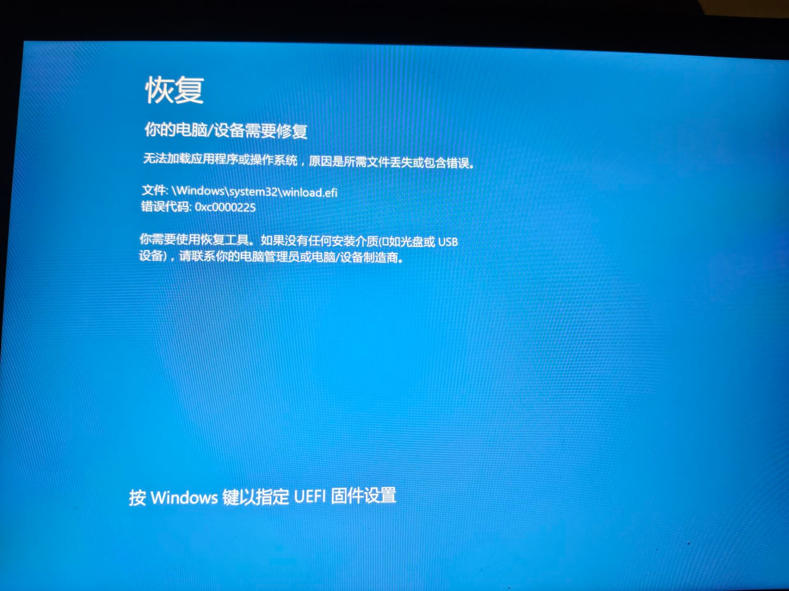
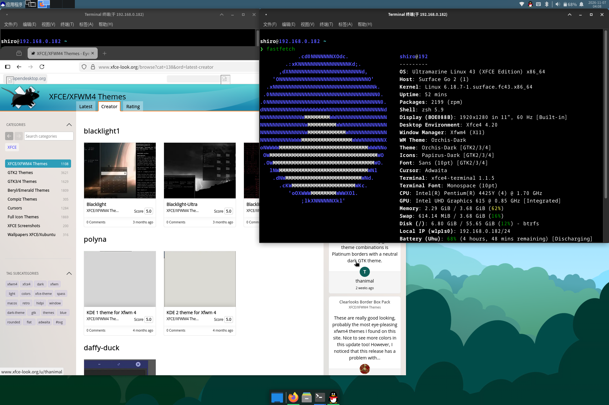
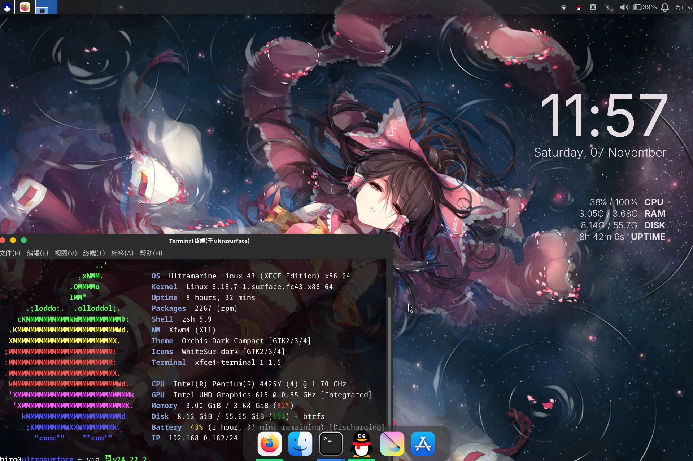

当初看到学校里不少人带平板到教室，于是也想着买个小平板来玩玩，在市场搜寻发现了 Surface 系列，一眼就感觉这是个刷linux的好模板，加上surface本身就外观好看，大品牌的同时还兼顾小众。我已经一刻也等不及带着这个机子出门，然后超绝不经意露出我的田牌标识，别人问起时淡淡的说：'这是我的surface，哈哈，你们不会用，因为我刷了linux系统。‘最后在我的磁吸式可拆卸键盘上ctrl alt T neof tab enter...简直是嘉豪神机。
几经考虑我买了 Surface Go 2。初代 Go 有点老了；Surface Pro 性能不错，但性价比不高。Go 2 是 2020—2021 年左右的产品，固件还不算老旧，价格却已经跌到接近电子垃圾的级别。我弄了个 4GB + 64GB 的版本，二手市场 380 元轻松拿下，几乎是买屏幕送电脑，而且老话说得好，aged like fine wine————越老的机器豪气越香，如此低的价格却能狠狠的豪，不敢想象。
一、我的超绝冷门系统
查资料时看到 Debian 和 Fedora 对 Surface 的兼容性都还可以，最后我选了 Fedora 衍生版 Ultramarine Linux 的 Surface 版，桌面用 Xfce。原因很现实：它直接带了 Surface 相关适配，官网直接给你提供专门的surface版，能省掉自己找内核、对驱动的一大堆麻烦，而且这发行版也够小众，别人一问，略懂的人听到是DebianFedoraArch都很大众，Ultramarine Linux一听就很陌生，小众b中的小众b。
二、没有转接头，尝试无盘安装
Surface Go 2 只有一个 USB-C 口，我手里只有普通 USB-A 的 U 盘，也没有转接头。于是我下载了 ISO，用 ULLI 尝试无盘安装：把镜像放在硬盘上，然后打开ULLI脚本点点点，同时在这之前先在bios里关安全启动，然后windows自己的引导顺序放最后。呵呵，无盘启动很酷。
坏消息是ULLI 自动生成的引导项有问题，这东西感觉不是很适合surface，最后只能按 e 进GRUB手动改。我把 set root= 指到了 mmcblk1p4，这神人位置我翻半天文件夹找不到，最后是问ai才知道的。Surface Go 2 的 eMMC 在 Linux 下通常识别为 mmcblk1，不是教程里常见的 sda，路径稍微错一点就进不去。而且后来我才了解到这里必须加 rd.live.ram=1，让 Live 镜像整体载入内存才能安装，不然很危险，这都是后话了。
进live后继续点点点安装。我本来就想删掉 Windows，所以在 Anaconda 里选了清空整个存储空间。结果清到一半报错：
unable to inform the kernel of the change... they are in use
原因并不复杂：Live 系统自己还挂在这块 eMMC 上。哪怕执行了 umount，底层的块设备依然被占用，安装器没法重写分区表。而且旧系统已经被拆了，新系统又没装上，我试着按照ai指导重启后，直接进入Windows界面，报 winload.efi 缺失，错误码 0xc0000225，然后直接啥也用不了，GRUB也进不去，而原来的linux引导也已经坏了，怀疑是windows把引导程序擦掉了，总而言之，这台机砖了。所以就是前面那个 rd.live.ram=1 没有加！怎么会...可恶啊！
三、老老实实用U盘
没办法，只能买 USB-C 转接头，翻出一张旧 U 盘。结果 Surface 根本不认。但插鼠标又能用，说明转接头的数据通道没问题。后来换了一张带 WePE 的旧 U 盘，它反而认了。更意外的是，两张 U 盘在另一台电脑上都能正常启动，只有 Surface 挑。反复试了几次，终于有一张能引导，我赶紧把 Ultramarine 刷了上去，这里就没什么好说的了，Ultramarine Linux官网教程一步一步走就行。

最后给你们看看我做的美化，哎呀乡屋宁～这可不是ios,这是基于fedora内核的Ultramarine43 Linux surface x86 xfce，我可是超冷门的surface go 2主机哦，你这种国产安卓机还好意思拿出来呀，kimo...
